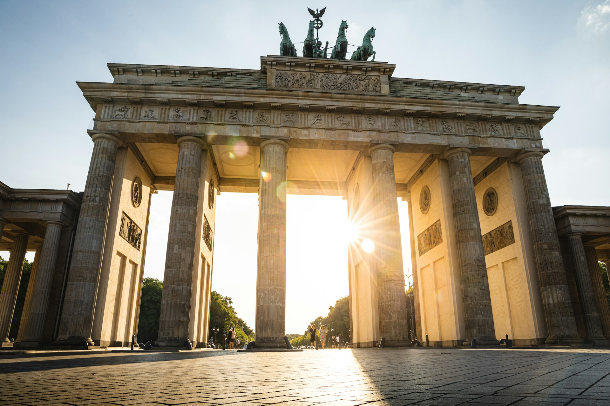
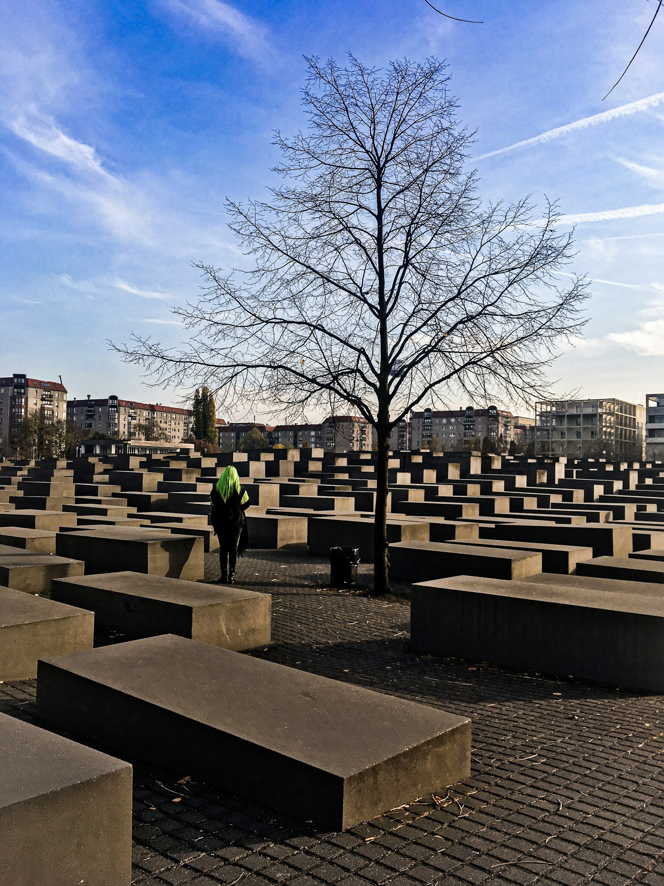
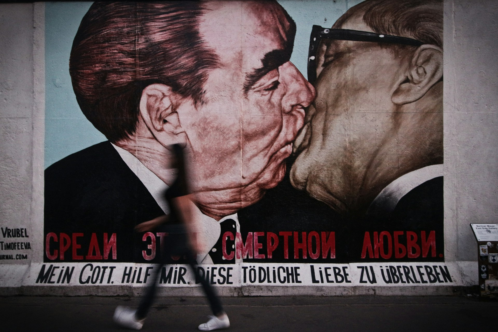

Charlottenburg Palace — Echoes of Royal Berlin
“Where Berlin’s royal past still whispers through gilded halls and quiet gardens.”
History & Landmarks
Berlin’s history is never far from sight—it's written into its architecture, layered through its neighborhoods, and even whispered through the quiet moments between busy streets. Exploring the city’s historic landmarks has always felt, to me, like uncovering chapters of a book that’s still being written. Each visit deepens the story, revealing new details that change how I understand not just Berlin, but the world around it.

Brandenburg Gate — Where History Opens Its Arms
“Standing beneath its arches, I feel Berlin’s past and present meeting in the same breath.”
My journey often begins at the Brandenburg Gate, a symbol that used to divide and now defines unity. I still remember the first time I saw it at sunrise—the plaza nearly empty, the soft light catching the columns just right. It felt like standing in a place where history inhaled and exhaled. From there, I’ll wander toward Pariser Platz and let the atmosphere shift from solemn to lively, a reminder of how cities heal.

Memorial of Silence — Paths of Memory
“Walking through these shifting corridors reminds me how history is felt, not just learned.”
Not far away, the Memorial to the Murdered Jews of Europe brings a completely different kind of reflection. Walking among the concrete slabs is disorienting, emotionally heavy,s yet essential. It’s a space that doesn’t tell you what to feel—it simply holds space for whatever truth you bring to it. I often see visitors fall silent, not out of obligation, but instinctively. It’s one of those places where history feels close enough to touch.
Of course, no exploration is complete without tracing the path of the Berlin Wall. The East Side Gallery is one of my personal favorites—not just because it's the longest open-air gallery in the world, but because it captures the moment Berlin turned pain into expression. Each mural, from hopeful doves to political satire, feels like a heartbeat. I love visiting early in the morning, when the colors are vibrant and the crowds haven’t begun to gather. If you look closely, you’ll notice how some murals have been restored multiple times—evidence that Berlin protects the symbols of its own rebirth.

East Side Gallery — Walls That Learned to Speak
“Here, the scars of the past turn into bold colors, carrying stories of hope along the river.”
Taking a detour into museums opens another doorway into the past. Museum Island is like a world of its own: five museums, each holding artifacts that span from ancient civilizations to the 19th century. Pergamon altar fragments, intricate Islamic art, Greek statues—every room feels like a portal. I sometimes spend hours wandering the quieter galleries, letting the weight of centuries settle in. It’s one of the few places where the global and the local histories merge naturally.
But what I love most about Berlin’s landmarks is that they aren’t isolated. They live in the rhythm of the city. A former checkpoint becomes a tourist hub; a preserved watchtower stands quietly next to new construction; meaningful plaques appear on random building corners, marking events you’d never know happened. The past blends with the present, unforced and unhidden.
If you walk through Berlin long enough, you start to feel that the city isn’t defined by what happened here—it’s defined by how it remembers, rebuilds, and retells its stories. And in those stories, there’s always an invitation: history here doesn’t stay behind glass—it invites you to stand inside it.